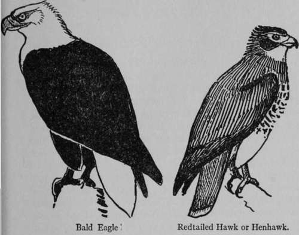
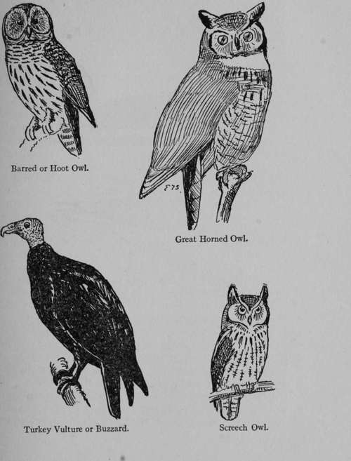
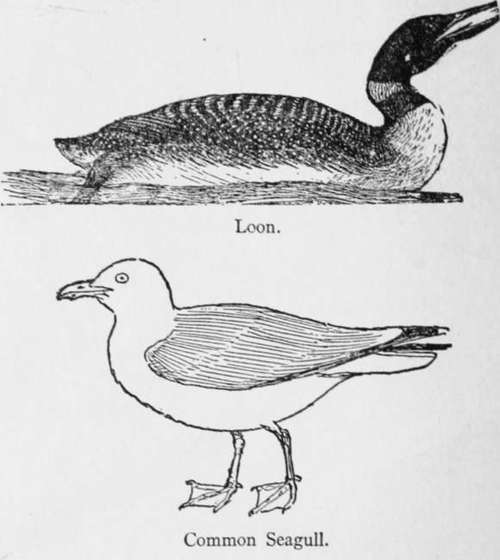
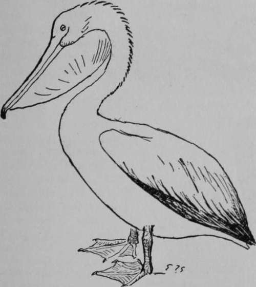
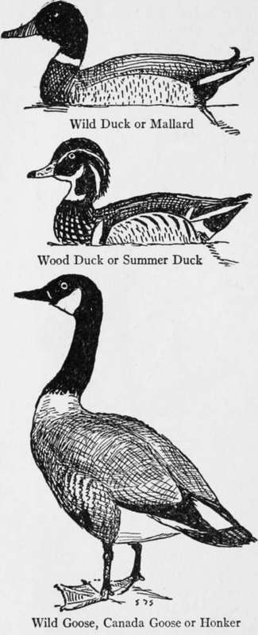

XIII. Natural History
Description
This section is from the book "The Book Of Woodcraft", by Ernest Thompson Seton. Also available from Amazon: The Book of Woodcraft.
XIII. Natural History
Our Common Bird Or Forty Birds That Every Boy Should Know
THE Bald Eagle or white-headed Eagle (Haliceetos leucocephalus) is the emblem of America. It is three to four feet from beak to tail, and six or seven feet across the wings. When fully adult it is known by its white head, neck and tail, and the brown body; but when young it is brownish black, splashed and marked with dull white.
The only other eagle found in the United States is the Golden or War Eagle (Aquila chrysaetos). This is a little larger. When full grown it is dark brown, with the basal half of tail more or less white. The plumage of the young birds is somewhat like that of the young Bald Eagle; but the two species may always be distinguished by the legs. The War Eagle wears leggings - his legs are feathered to the toes. He is ready for the warpath. The Bald Eagle has the legs bald, or bare on the lower half.
Redtailed Hawk Or Henhawk ( Buteo Borealis)
The common hawks of America are very numerous and not easy to distinguish. The best known of the large kinds is the Redtail. This is about two feet long and four feet across the wings. In general it is dark brown above and white beneath, with dark brown marks; the tail is clear reddish with one black bar across near the tip. In young birds the tail is gray with many small bars. It has four primaries notched on the inner web. The legs are bare of feathers for a space above the toes. It is common in North America east of the Rockies up to mid-Canada. It does much good, killing mice and insects. It is noted for its circling flight and far-reaching whistle or scream.
The Barred Or Hoot Owl (Strix Varia)
This Owl is known at once by the absence of horns, the black eyes and the plumage barred across the chest and striped below that. It is about twenty inches long, in general gray-brown marked with white. It is noted for its loud hooting; it is the noisiest owl in our woods. Found in the wooded parts of America up to about latitude 50 degrees, east of the Plains.
Great Horned Owl Or Cat Owl (Bubo Virginianus)
This is the largest of our Owls. About twenty-four inches long and four feet across the wings. It is known at once by its great ear tufts, its yellow eyes, its generally barred plumage of white, black and buff, and its white shirt front. This is the winged tiger of the woods. Noted for its destruction of game and poultry, it is found throughout the timbered parts of North America.
Screech Owl (Otus Asio)
This is not unlike the Horned Owl in shape and color but is much smaller - only ten inches long. Sometimes its plumage is red instead of gray. It feeds on mice and insects and has a sweet mournful song in the autumn - its lament for the falling leaves. It is found in the timbered parts of North America.
Turkey Vulture Or Buzzard (Cathartes Aura)
The Turkey Vulture is about two and a half feet long and about six feet across its wings. It is black everywhere except on the under side of the wing which is gray, and the head which is naked and red. It is known at once by the naked head and neck, and is famous for its splendid flight. It is found from Atlantic to Pacific and north to the Saskatchewan. It preys on carrion.
In the Southern States is another species - the Black Vulture or Carrion Crow - which is somewhat smaller and wears its coat collar up to its ears instead of low on the neck; also its complexion is dusky not red.
Loon (Gavia Immer)
The common Loon is known by its size - thirty-two inches long and about four feet across the wings - and its brilliant black and white plumage. It is noted for its skill as a fisher and diver. Its weird rolling call is heard on every big lake in the country.
Common Seagull (Larus Argentatus)
The common Seagull is twenty-four inches long and four feet across. The plumage is white with blue-gray back, when adult; but splashed brown when young, and with black tips to the wings. Its beak is yellow with red spot on the lower mandible. It is found throughout North America.
Pelican (Pelecanus Erythrorhynchos)
The white Pelican is known at once by its great size - about five feet long and eight feet across the wings - by its long beak, its pouch, and its feet fully webbed. Its plumage is white, but the wing tips are black. It is found in the interior of America up to Great Slave Lake.
Wild Duck Or Mallard (Anas Platyrhynchos)
Of all our numerous wild ducks this is the best known. It is about twenty-three inches long. Its bottle-green head, white collar, chestnut breast, penciled sides and curled up tail feathers identify it. The female is streaky brown and gray. It is found in all parts of the continent, up to the edge of the forest. This is the wild duck from which tame ducks are descended.
Pelican.
Wood Duck Or Summer Duck (Aix Sponsa)
This beautiful duck is about eighteen inches long. Its head is beautifully variegated, bottle-green and white. Its eye is red, its breast purplish chestnut, checkered with white spots, while its sides are buff with black pencilings. This is one of the wildest and most beautiful of ducks. It nests in hollow trees and is found in North America up to about latitude 50 degrees.
Wild Goose, Canada Goose Or Honker (Branta Canadensis)
This fine bird is about three feet long. Its head and neck are black; its cheek patch white; its body gray; its tail black with white coverts above and below. It is found up to the Arctic regions, and breeds north of about latitude 45 degrees. It is easily tamed and reared in captivity.
Continue to:
- prev: Starvation Foods In The Northern Woods. Continued
- Table of Contents
- next: Natural History. Part 2
Tags
bookdome.com, books, online, free, old, antique, new, read, browse, download